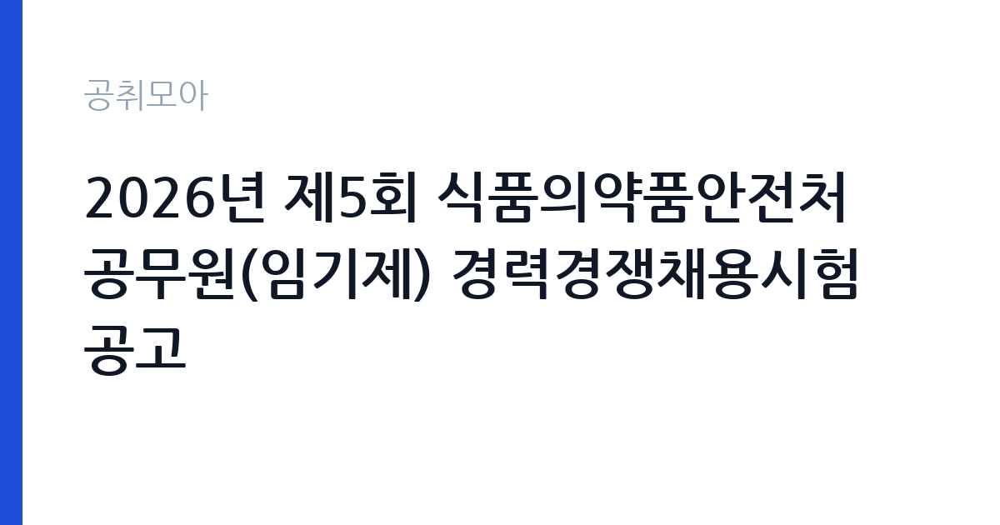

[국가기관] 2026년 제5회 식품의약품안전처 공무원(임기제) 경력경쟁채용시험 공고
식품의약품안전처 · 충북 · 마감 2026-10-06 (D-14) · 출처 나라일터

한눈에 보는 모집 조건
| 기관 | 식품의약품안전처 |
|---|---|
| 공고명 | 2026년 제5회 식품의약품안전처 공무원(임기제) 경력경쟁채용시험 공고 |
| 고용형태 | 임기제 |
| 근무지 | 충북 |
| 게시일 | 2026-09-22 |
| 마감일 | 2026-10-06 (D-14) |
지원자격, 이렇게 읽으세요
- 서기관(일반임기제) 1명 행정사무관(일반임기제) 1명 전산사무관(일반임기
- 접수 ~2026-10-06 마감
- 세부 조건은 원문 공고문 확인
자격요건은 경력과 학위 등으로 직급별로 다르게 적용됩니다. 서기관급은 해당 분야의 풍부한 경력이나 고급 학위를 요구하는 것이 일반적이며, 주사급은 실무 경력 중심으로 평가합니다. 세부 기준은 직급과 분야마다 다르므로 식약처 우수인재채용시스템의 공고문을 직접 확인하셔야 합니다. 그래픽 디자이너 분야는 포트폴리오가 핵심 평가 자료가 될 수 있습니다. 전산 분야는 정보시스템 구축과 운영 경험을, 법무행정 분야는 관련 법제 실무를 증명할 수 있어야 합니다. 문의처는 043-719-1247입니다.
이 공고의 포인트
첫 번째 포인트는 한 번의 공고로 여러 직급과 분야를 함께 뽑는 대규모 채용이라는 점입니다. 본인의 경력 수준에 맞는 직급을 골라 지원할 수 있습니다. 두 번째로 온라인 홍보와 디지털소통, 공공데이터 같은 디지털 분야 비중이 커, 민간에서 관련 실무를 쌓은 분에게 유리합니다. 세 번째로 인터넷 접수만 가능해 등기우편보다 지원이 간편하며, 마감 시간(10월 6일 16시)만 지키면 됩니다. 식약처라는 보건 전문 부처의 디지털 전환에 참여할 수 있는 기회입니다.
전형은 어떻게 진행되나
전형은 경력경쟁채용 방식으로 서류전형과 면접시험을 거쳐 선발합니다. 응시방법은 식약처 우수인재채용시스템에서의 인터넷 접수만 가능하며, 우편과 방문 접수는 받지 않습니다. 접수 시간은 9월 23일 10시부터 10월 6일 16시까지로, 마감일 오후에는 접속이 몰릴 수 있으니 미리 접수하시기 바랍니다. 직급과 분야별로 전형 일정이 다를 수 있으므로 공고문의 분야별 안내를 꼼꼼히 읽어보시기 바랍니다.
원문에서 확인한 전형 방식
○ 모집분야: 온라인 홍보, 디지털소통기획, 공공데이터 관리 등, 법무행정, 정보시스템 구축·운영, 디지털소통 콘텐츠 제작(그래픽 디자이너) ○ 선발직급 - (일반임기제) 서기관, 행정사무관, 전산사무관, 행정주사, 전산주사 - (전문임기제) 라급 ○ 고용형태: 임기제 ○ 자격요건: 경력, 학위 등(각 직급별 자격요건 상이) ○ 접수기간: 2026년 9월 23일(수) 10:00 ~ 2026년 10월 6일(화) 16:00 ○ 응시방법: 식품의약품안전처 우수인재채용시스템(https://employ.mfds.go.kr/main.do)에서 접수 (인터넷 접수만 가능) ○ 문의처: 043-719-1247 ※ 자세한 내용은 공고문을 참고하여 주시기 바랍니다
이런 분께 추천해요
- 온라인 홍보와 디지털소통, 콘텐츠 제작 실무 경험이 있으신 분
- 정보시스템 구축·운영이나 공공데이터 관리 경력을 보유하신 분
- 법무행정 분야에서 공공부처 실무에 참여하고 싶으신 분
지원 전 체크리스트
- 본인의 경력·학위가 지원 직급의 자격요건에 맞는지 확인했습니다
- 그래픽 디자이너 지원자는 포트폴리오 제출 요건을 확인했습니다
- 인터넷 접수 마감 시간(10월 6일 16시)을 확인하고 미리 접수했습니다
- 증빙서류의 발급 시기와 유효 조건을 공고문에서 확인했습니다
모집 일정과 제출 타이밍
접수 기간은 2026년 9월 23일 10시부터 10월 6일 16시까지 약 2주간입니다. 추석 연휴가 포함될 수 있으니 연휴 전에 증빙서류를 준비해 두시기 바랍니다. 서류전형 합격자 발표와 면접 일정은 분야별로 다를 수 있어 식약처 채용시스템의 공지를 수시로 확인하시기 바랍니다. 마감일 당일 접수는 시스템 지연의 위험이 있으니 최소 하루 전에는 접수를 마치시기 바랍니다.
직무 이해하기: 국가기관
선발된 인원은 식약처의 온라인 홍보와 디지털소통 기획, 공공데이터 관리, 법무행정 지원, 정보시스템 구축·운영, 그래픽 콘텐츠 제작 등의 업무를 맡습니다. 식약처는 식품과 의약품, 의료기기의 안전을 총괄하는 부처로, 국민 소통과 디지털 행정의 중요성이 큽니다. 충북 오송의 식약처 본부에서 근무하며, 임기제 공무원으로 해당 분야의 전문성을 발휘하게 됩니다. 국가기관 카테고리 공고입니다.
자기소개서 작성 팁
경력기술서에서는 지원 분야의 실무 경험을 수치와 함께 구체적으로 기술하시기 바랍니다. 홍보 분야는 운영했던 채널의 성과와 제작물의 반응을, 전산 분야는 구축했던 시스템의 규모와 역할을 제시하면 좋습니다. 식약처라는 보건 전문 부처의 특성을 이해하고 있다는 점을 보여주시기 바랍니다. 직무수행계획서에는 임기 동안 달성할 목표를 현실적으로 제시하시기 바랍니다.
면접 준비 포인트
면접에서는 지원 분야의 전문 지식과 식약처 업무에 대한 이해를 질문받을 가능성이 큽니다. 최근 식약처의 디지털소통 사례나 식품·의약 안전 이슈를 미리 살펴보시기 바랍니다. 경력 기반 질문에는 구체적인 사례 중심으로 답변하시고, 임기제 근무에 대한 수용 의사를 명확히 밝히시기 바랍니다. 오송 근무 가능 여부도 미리 정리해 두시기 바랍니다.
급여·근무조건 읽는 법
보수 수준은 원문 공고문에서 확인하셔야 합니다. 일반임기제 공무원의 봉급은 공무원보수규정에 따른 연봉제로 책정되며, 직급(서기관·사무관·주사)에 따라 연봉 한도가 다릅니다. 전문임기제 라급도 별표의 연봉 기준이 적용됩니다. 2026년도 직종별 공무원 봉급표는 인사혁신처 홈페이지에서 조회하실 수 있습니다. 본인의 경력에 따른 예상 연봉은 원문의 보수 조건과 문의처 043-719-1247을 통해 확인하시기 바랍니다.
자주 묻는 질문
- 여러 분야 중 중복 지원이 가능합니까
분야별 중복 지원 가능 여부는 원문 공고문에서 확인하시기 바랍니다. 일반적으로 임기제 경력경쟁채용은 1개 분야에만 지원하는 것을 원칙으로 하는 경우가 많습니다. - 접수는 어떻게 합니까
식약처 우수인재채용시스템에서의 인터넷 접수만 가능합니다. 우편과 방문 접수는 받지 않으니 마감 시간을 지켜 온라인으로 접수하시기 바랍니다. - 근무지는 어디입니까
식품의약품안전처 본부가 위치한 충북 오송에서 근무하게 됩니다. 세부 부서는 임용 시 안내받으시게 됩니다.
함께 보면 좋은 공고
[국가기관] 과학기술정보통신부 전문임기제 다급(과학기술 인력양성) 경력경쟁채용 재공고 — 마감 2026-10-06[국가기관] 육군교육사령부 한시임기제군무원(응급구조담당) 채용 — 마감 2026-10-06[국가기관] 2026년 제7회 해양수산부 전문임기제 공무원(인공지능 기획) 경력경쟁채용시험 공고 — 마감 2026-10-02출처: 나라일터 공개정보를 바탕으로 공취모아가 정리한 안내글입니다. 모집 조건·일정은 변경될 수 있으니 지원 전 반드시 원문 공고문을 확인하세요. 본 글은 정보 제공용이며 합격을 보장하지 않습니다.